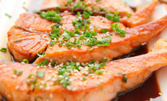
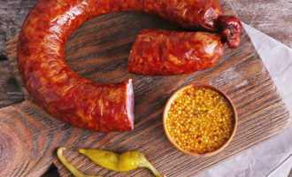
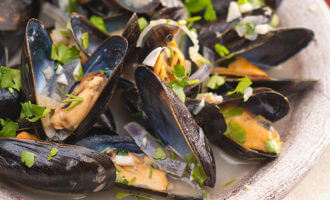
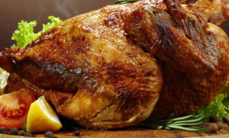
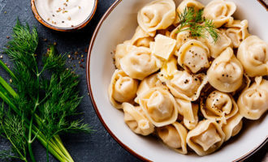
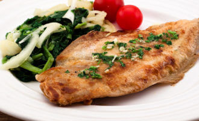
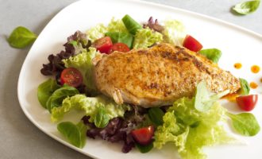
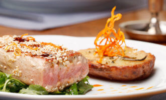

Подразделы

Отличный рецепт вкусного рыбного филе в соевом соусе.
Приглашенные
гости по достоинству оценят Ваше мастерство как кулинара!

Отличный рецепт куриного филе удовлетворит даже самых заядлых
гурманов!

Домашняя колбаса является главным блюдом на столе в канун
больших праздников. Отличный рецепт поможет Вам быстро приготовить вкусную колбасу.

Сегодня я расскажу Вам как приготовить одно из любимейших блюд
нашей семьи — плов с мидиями. Рецепт достаточно прост и не займет много времени.

Рецепт позволит Вам довольно быстро приготовить вкусное и
одновременно диетическое блюдо.

Отличный рецепт запеченной целиком курицы станет прекрасным
подарком на праздничном столе для всей семьи.

Отличный рецепт, позволяющий в самые короткие
сроки приготовить сытный обед.

Рецепт, позволяющий быстро приготовить вкусное
блюдо, которое вместе с пюре или макаронами станет отличным

Рецепт, позволяющий приготовить вкусное и
питательное мясное блюдо на ужин.

Отличный рецепт, позволяющий быстро приготовить
благородное и вкусное блюдо. Жареная рыба